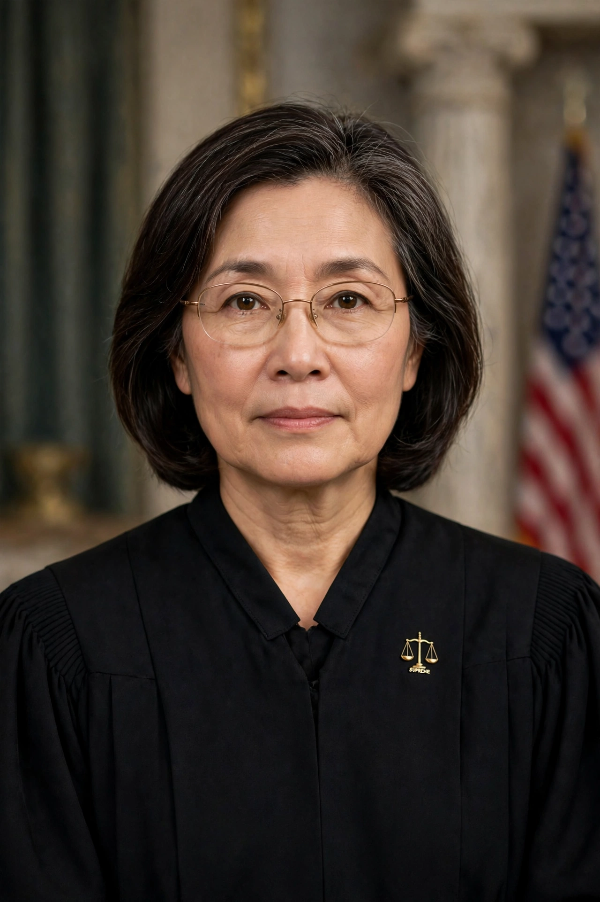

| Elena Kagan | |
|---|---|
| Office | Associate Justice of the Supreme Court of the United States |
| Assumed office | 7 August 2010 |
| Nominated by | Barack Obama |
| Preceded by | John Paul Stevens |
| Previous office | 45th U.S. Solicitor General (2009–2010); Dean of Harvard Law School (2003–2009) |
| Born | 28 April 1960, New York City, U.S. |
| Education | Princeton University (AB); University of Oxford (MPhil); Harvard University (JD) |

Elena Kagan (born April 28, 1960) is an American lawyer and jurist who serves as an associate justice of the Supreme Court of the United States. She was nominated by President Barack Obama on May 10, 2010, and has served since August 7, 2010. Kagan is the fourth woman to serve on the Court and succeeded Justice John Paul Stevens.
Raised on Manhattan's Upper West Side, Kagan graduated from Princeton, Oxford (as a Marshall Scholar) and Harvard Law School, where she later taught. She clerked for Judge Abner Mikva and Justice Thurgood Marshall, worked in the Clinton White House, and in 2003 became the first female dean of Harvard Law School. In 2009 Obama appointed her the first female Solicitor General, arguing cases before the Court she would soon join under Chief Justice John Roberts.
Kagan is regarded as a liberal justice known for an accessible, often witty writing style and for building consensus. She has dissented in major cases including Rucho v. Common Cause (2019), where she wrote that the majority's refusal to police partisan gerrymandering would damage American democracy, and in cases concerning the Elections Clause and administrative law. She was also part of the majority in decisions protecting LGBTQ rights such as Bostock v. Clayton County (2020).